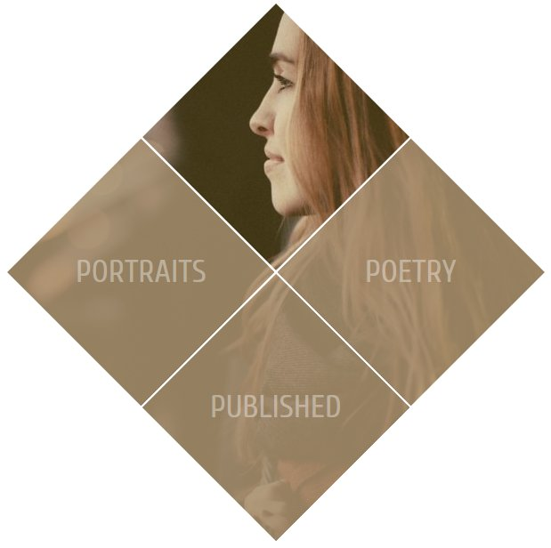
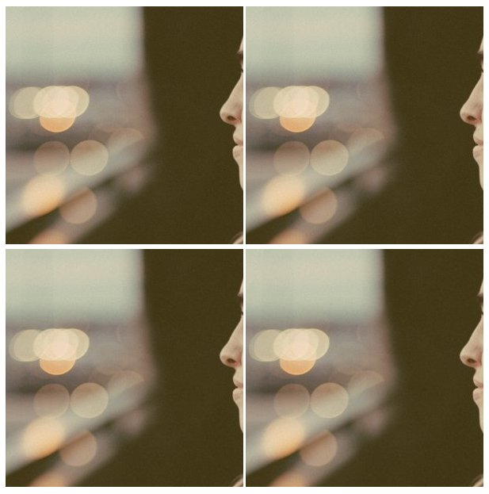
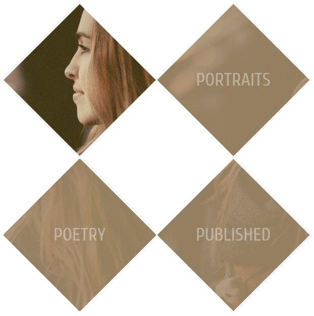
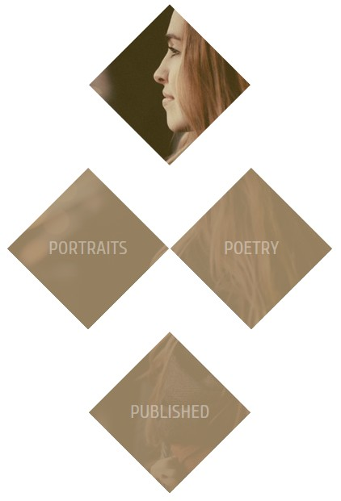
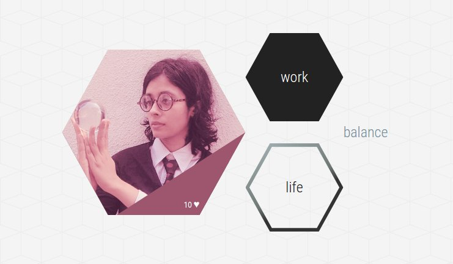

Реальные примеры с clip-path
Каждая демонстрация использует clip-path из CSS, но в разметке также содержится встроенный SVG с классом clip-svg, который просто сбрасывает ширину и высоту SVG до 0. Вы также можете удалить этот класс и задать атрибуты width и height непосредственно в разметке SVG.
Пример 1: Обрезка изображений разными многоугольниками
Если вам требуется быстрое определение многоугольника — это замкнутая двумерная фигура, состоящая из прямых линий.
Таким образом, фигура не может быть многоугольником, если она содержит закругления, открыта или состоит меньше, чем из трёх линий. Наиболее известные многоугольники в истории — это треугольники, четырёхугольники, пятиугольники и шестиугольники. Даже звёзды является многоугольниками, поскольку границы многоугольника могут пересекать друг друга.
Примечание. Изображения в этой демонстрации адаптивные. Используя хорошее решение для адаптивных изображений img { max-width: 100%; height: auto; }, а также адаптивные обтравочные контуры через CSS и SVG, мы делаем наши многоугольники прекрасно масштабируемыми.
Данная демонстрация является результатом упражнения для понимания построения координат при создании многоугольников. В демонстрации ниже я добавила несколько фигур, которые вы можете использовать в своих проектов. При наведении на каждое изображение вы увидите соотношение сторон исходного изображения.
Ничто не сравнится с исключительным инструментом Clippy для визуализации фигур — графическим интерфейсом от Беннетта Фели. Координаты всех существующих фигур представлены в процентах, также есть возможность добавления собственного многоугольника. Вы можете использовать Clippy для создания обрезанных фигур и своего SVG на их основе для лучшей поддержки в браузерах.
See the Pen Clip-path: Polygon shapes by webref (@webref) on CodePen.
Пример 2: Анимация базовых фигур через transition
Наведите курсор на фиолетовый шестиугольник и он превратится в восьмиугольник. Однако заданного эффекта перехода не произойдёт.
See the Pen Clip-path: shape transition: Part 1 by webref (@webref) on CodePen.
Причина объясняется в статье Сары Суэйдан об анимации фигур через CSS: «Число точек, определяющих конечную фигуру, должно быть таким же, как число точек, определяющих начальную фигуру». Вполне логично!
Поскольку шестиугольник содержит шесть пар координатных точек, давайте добавим две пары через дублирование, чтобы их стало восемь и они соответствовали числу пар для восьмиугольника. Эти дублированные пары не будут влиять на форму шестиугольника.
Вот описание шестиугольника с шестью парами координатных точек:
clip-path: polygon(50% 0%, 100% 25%, 100% 75%, 50% 100%, 0% 75%, 0% 25%);А это описание шестиугольника с восемью парами координат, первые две из которых были дублированы:
clip-path: polygon(50% 0%, 50% 0%, 100% 25%, 100% 25%, 100% 75%, 50% 100%, 0% 75%, 0% 25%);Теперь переход при трансформации фигур будет плавным, как видно в демонстрации ниже.
Учтите, что для браузеров, которые поддерживают обтравочные контуры только на SVG, нам нужно добавить анимацию SMIL, чтобы получить бесшовный переход при наведении. Согласно спецификации SMIL, декларативные анимации могут применяться для анимации линий и точек многоугольника в SVG, что в настоящее время невозможно с помощью CSS.
Имейте в виду, что некоторые люди обсуждают устаревшие SMIL в Chrome и Chromium и уделяют особое внимание внедрению Web Animations API, который, к сожалению, находится на стадии рабочего проекта.
В демонстрации ниже (фоновое изображение предоставлено morgueFile), вы можете видеть, как мы анимировали точки многоугольника между событиями mouseover и mouseout в течение 0,2 секунд. Присмотритесь к тегу <animate> в разметке SVG.
See the Pen Clip-path: shape transition: Part 2 by Karen Menezes (@imohkay) on CodePen.
Пример 3. Добавление рамки к обрезанному объекту
Для сокращения рассказа — границы, контуры и тени, которые лежат за пределами области отсечения, удаляются.
Мне было немного грустно от этого, и я поспрашивала членов W3C по рабочей группе CSS. Однако вывод в том, что нет способа сделать это при использовании базовых фигур. Дирк Шульцe так ответил на мой вопрос: «Да, все операции рисования с элементом отсекаются. Сюда входят контуры и границы».
Смотрите демонстрацию ниже. Наведите указатель на ромбоид с неполной рамкой, чтобы увидеть исходную, необрезанную версию с целой рамкой.
See the Pen Clip-path: Borders by Karen Menezes (@imohkay) on CodePen.
Конечно, мы всегда можем использовать приём, к которому я наконец пришла, и получить рамку с помощью генерируемого содержимого.
В демонстрации ниже создаётся копия элемента через псевдоэлемент ::after и затем он позиционируется абсолютно. Это создаёт иллюзию рамки, позволяя нам моделировать интересные эффекты, такие как градиентная рамка на втором восьмиугольнике и внутренняя тень через фильтр CSS на третьем (не очень изящно, но функционально). Обратите внимание, что фильтры CSS в настоящее время работают только в Firefox и в браузерах WebKit и Blink.
See the Pen Clip-path: Border simulation by Karen Menezes (@imohkay) on CodePen.
Пример 4: Использование clip-path для создания ромбовидной сетки
Ниже приведено изображение, которое будем использовать.
Вот эффект, к которому мы стремимся. При наведении указателя на нижние три блока вы увидите, что фоновый цвет исчезает и проступает изображение.

Фактический размер изображения составляет 600×600 пикселей. Так что начнём с четырех пустых <div> по 300 пикселей каждый и применим к ним одно и то же фоновое изображение. Затем добавим родителя размером 604 пикселя и скомпонуем изображения с помощью inline-block.

Теперь изменим значение свойства background-position для каждого изображения на top, left, right и bottom, соответственно.
Обрежем каждый блок в виде ромба и наложим абсолютно позиционированный слой с некоторым текстом на каждое из нижних трёх изображений.

Теперь переместим изображения по рядам — второе и третье изображения в один ряд, а первое и четвертое в отдельные ряды.

Наконец, используем отрицательные margin для смещения второй и третьей строки, чтобы они выстроились как в окончательной демонстрации ниже. Мы можем удалить значение ширины 604 пикселя у родителя и переделать медиа-запрос, чтобы четыре ромба складывались в колонку на маленьких экранах и в ряды на больших.
See the Pen Clip-path: Diamond grid by Karen Menezes (@imohkay) on CodePen.
Во время работы над этой демонстрацией я заметила ошибку в Chrome, связанную с событиями указателя, они отправлялись за пределами области отсечения, что нарушает спецификацию: «По умолчанию события указателя не должны отправляться за пределами обрезанной (невидимой) области». Я сообщила о данной ошибке. Проблема с этой демонстрацией была решена с помощью свойства pointer-events со значением none для класса overlay. В качестве альтернативы вы можете применить то же самое значение clip-path к overlay для обхода проблемы.
Из-за отрицательных margin эта демонстрация будет выглядеть странно в браузерах, которые не поддерживают clip-path. Так что желательно использовать какую-то проверку перед применением margin (но сама я с этим не экспериментировала) или @supports, хотя не рекомендовала бы последнее в рабочем коде.
Пример 5. Создание фиктивной страницы профиля на шестиугольниках
Наша финальная страница должна выглядеть так:

Начнём с добавления фоновой картинки в виде шестиугольных плиток к body (изображение любезно предоставлено Subtle Patterns).
Значения clip-path для шестиугольника могут быть получены с одной из демонстраций выше или с помощью инструмента Clippy.
Первый шестиугольник использует фоновое изображение (потому что мы смешиваем тусклый бордовый цвет с фоном с помощью свойства background-blend-mode). Используя генерируемое содержимое, абсолютно позиционированный элемент обрезается до бордового треугольника, его вы можете видеть снизу. Он исчезает при наведении.
Для второго шестиугольника со словом «work» просто задан тёмно-серый фон, который меняется при наведении.
Третий шестиугольник содержит градиентную рамку, аналогичную той, что показана в демонстрации при создании рамок на clip-path.
Шестиугольники вертикально выстраиваются на маленьких экранах и выравниваются по центру на больших. Я использовала комбинацию display: table, абсолютного позиционирования и трансформации. Конечно, вы можете воспользоваться flexbox, float или чем-то ещё, что заставит вашу лодку плавать.
Вот заключительная демонстрация.
See the Pen Clip-path: Hexagon shapes for dummy profile page by Karen Menezes (@imohkay) on CodePen.
Я обнаружила ошибку с clip-path при создании этой демонстрации. Изменение значения opacity в сочетании с переходом CSS вызывает мерцание и артефакты на странице. Помните об этом, если используете clip-path для прогрессивного улучшения дизайна.
Также имеется другая ошибка с clip-path и свойством backface-visibility, когда оно задано как hidden. Эта ошибка задокументирована в Chromium и мне удалось воспроизвести её, используя синтаксис базовых фигур в Chrome под Linux. Имейте это в виду, если используете clip-path для создания классного трёхмерного разворота или чего-нибудь, что использует трёхмерную трансформацию CSS.
В то время как отсечение с помощью SVG бесспорно побеждает из-за гибкости и возможностей, оно не сравнится по простоте, с которой элементы могут быть обрезаны с помощью CSS. Фактически, одни и те же координаты многоугольников могут быть легко переработаны для создания адаптивного SVG для ещё лучшей поддержки в браузерах.
Благодаря clip-path вы можете значительно изменить внешний вид страницы, не беспокоясь о старых браузерах, где страница будет изящно деградировать. Если вы решите использовать clip-path для улучшения дизайна, следите за спецификацией, поскольку она продвигается к статусу «Рекомендация».